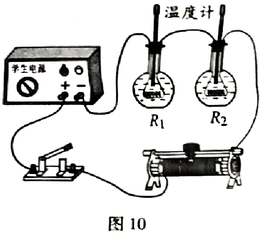
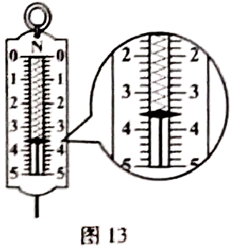

2018年北京市中考物理试题 · 选择题 第21、22题

21. 小辉想探究电流通过电阻时产生的热量与哪些因素有关。他连接了如图10所示的电路进行实验，其中两个完全相同的烧瓶内分别装有质量相等、初温均为25℃的煤油，阻值为5Ω和10Ω的电阻丝R1、R2。闭合开关一段时间后，记录此时两个温度计的示数。根据上述实验，下列说法中正确的是A. 此实验探究的是热量与电阻的关系
B. 此实验探究的是热量与电流的关系
C. 此实验探究的是热量与时间的关系
D. 此实验中用温度计示数变化的大小反映产生热量的多少
22. 图11所示为冬奥会的一些运动项目，关于这些项目中的情景，下列说法中正确的是
A. 跳台雪运动员在空中下落的过程中，重力势能不变
B. 短道速滑运动员在转弯滑行的过程中，运动状态不变
C. 冰壶运动员掷出去的冰壶能继续向前运动，是由于冰壶具有惯性
D.

冰球运动员用球杆推着冰球使其水平滑动的过程中，冰球所受重力没有做功